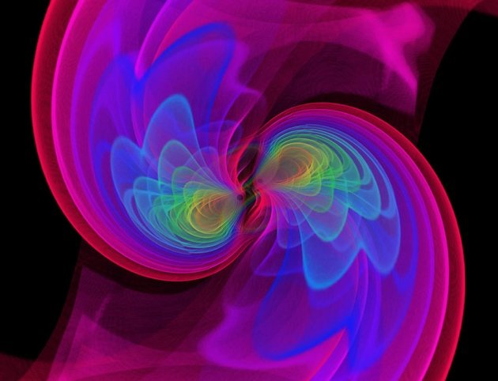

TTCT - Đã gọi là sóng hấp dẫn thì đương nhiên là hấp dẫn rồi? Xin trả lời đấy là cách nghĩ của người ngoài cuộc, với người trong cuộc thì hai chữ “hấp dẫn” này khác hẳn nhau. Một đằng là một hiện tượng vật lý, còn đằng kia lại thuộc về tâm lý. Tuy cùng là chữ “hấp dẫn” nhưng lại khác hẳn nhau về nghĩa.  Mô phỏng máy tính về sóng hấp dẫn gây ra bởi hai lỗ đen kết hợp với nhau trong đo đạc của LIGO. S. Ossokine, A. Buonanno (Max Planck Inst. Gravitational Phys.). Scientific Visualization: W. Benger (Airborne Hydro Mapping) -Nguồn: Nature Từ tuyệt đối đến tương đối Câu chuyện về sóng hấp dẫn không thể nào tách rời khỏi câu chuyện về không gian và thời gian. Không gian và thời gian là những thứ quen thuộc với chúng ta ngay từ khi còn nhỏ. Chúng ta sống trong không gian, sử dụng thời gian. Chúng ta nhắc đến chúng thường xuyên, nên có thể nói ai cũng biết không gian và thời gian và mặc nhiên thừa nhận nó. Nhưng không gian là gì, thời gian là gì? Vì rơi vào tình cảnh biết mà không hiểu nên cách tốt nhất là mặc nhiên thừa nhận nó mà không cần giải thích gì nhiều. Đó là quan điểm của cả khoa học và triết học trước Einstein, mà điển hình là quan điểm của Newton về không gian và thời gian. Newton cho rằng không gian là tuyệt đối. Nó giống như một sân khấu để mọi thứ diễn ra trong đó. Nếu một ngày mọi thứ trên đời này biến mất, không gian vẫn trơ gan cùng tuế nguyệt. À không, trơ gan với chính mình, vì khi đó tuế nguyệt cũng chẳng còn để mà so sánh. Còn thời gian là một dòng chảy vĩnh cửu từ quá khứ đến tương lai, đều đặn và không ngừng nghỉ. Cả không gian và thời gian đều khách quan và tuyệt đối. Không ai hay cái gì có thể can thiệp hay thay đổi không gian và thời gian được. Quan niệm về không gian và thời gian như vậy đã thống trị trong khoa học mà cụ thể là trong cơ học cổ điển của Newton suốt mấy trăm năm cho đến đầu thế kỷ 20, khi lý thuyết tương đối của Einstein xuất hiện. Khi đó chúng ta mới vỡ ra rằng thì ra không gian và thời gian là tương đối, cũng như không gian và thời gian không thể tách rời nhau mà hòa quyện với nhau thành một thực thể. Sóng hấp dẫn là gì? Sự kiện này đánh dấu một bước tiến lớn trong hành trình khám phá tự nhiên của loài người, và giải Nobel vật lý 2016 gần như chắc chắn sẽ được dành để tôn vinh thành tựu khoa học vĩ đại này. Sóng là gì? Ai chẳng vài lần ngắm nhìn sóng nước nhấp nhô. Thả miếng bọt biển sẽ thấy nó bập bềnh theo từng nhịp sóng. Nếu quan sát kỹ thì thấy tấm bọt vẫn đứng yên, tức là phần nước bên dưới nó cũng đứng yên, chỉ có sự dao động lên xuống là lan truyền. Vậy nên, sóng theo định nghĩa của vật lý là sự lan truyền của dao động. Sự lan truyền này sẽ được mô tả bằng các phương trình vi phân trong toán học. Thế nhưng, dao động là gì? Là những chuyển động lặp đi lặp lại quanh một vị trí, thường là vị trí cân bằng. Trong sóng nước đã nói ở trên thì các phân tử nước chuyển động lên xuống quanh vị trí ban đầu của mặt nước đứng yên, làm cho miếng bọt biển nhấp nhô lên xuống. Hiển nhiên, các dao động lên xuống có năng lượng. Vì thế sóng mang theo năng lượng và quá trình truyền sóng tiêu tốn năng lượng. Sóng truyền đi càng xa nguồn thì năng lượng của nó càng yếu. Thế còn hấp dẫn? Hấp dẫn ở đây là một hiện tượng vật lý. Người đầu tiên khám phá ra không ai khác chính là Newton. Tương truyền khi ông đang ngồi dưới gốc cây táo, chưa rõ là để ngẫm nghĩ sự đời hay suy tư về khoa học, thì thấy quả táo rơi trúng đầu. Ông tự hỏi: Cái gì làm cho quả táo rơi? Và ông ngộ ra câu trả lời thật bất ngờ: Chính lực hút của Trái đất làm cho trái táo rơi. Ông gọi đó là lực hấp dẫn. Và ngay tức thì, ông mở rộng kết luận này cho vạn vật trên đời, rằng: mọi vật có khối lượng đều hút nhau với một lực tỉ lệ thuận với tích khối lượng của hai vật và tỉ lệ nghịch với bình phương khoảng cách giữa chúng. Vì đó là lực hút nên được gọi là lực hấp dẫn, và định luật của ông áp dụng cho vạn vật nên được gọi là định luật vạn vật hấp dẫn. Dù sau này như ta thấy, cách gọi “lực hấp dẫn” không phản ánh đúng bản chất của sự việc, vì té ra chẳng ai hấp dẫn ai cả, mọi vật chỉ đơn thuần chuyển động theo đường trắc địa, tức là đường ngắn nhất trong không gian cong, tương đương với đường thẳng ở trong không gian phẳng. Cái gì đã làm cho không gian cong? Câu trả lời đến từ Einstein. Chính vật chất đã làm cho không gian bị cong đi. Mật độ vật chất càng lớn, không gian càng bị uốn cong nhiều. Không gian và vật chất có mối quan hệ chặt chẽ với nhau. Đó là nội dung quan trọng nhất của thuyết tương đối rộng. Trước đó, bằng thuyết tương đối hẹp, Einstein đã cho chúng ta biết không gian và thời gian không còn tuyệt đối như trong quan niệm của Newton nữa mà phụ thuộc vào chuyển động. Không gian và thời gian cũng không còn tách rời nhau mà quyện vào nhau thành một thể thống nhất, gọi là không - thời gian. Vật chất và năng lượng cũng không phải là hai đại lượng độc lập mà chuyển hóa lẫn nhau. Như vậy, vật chất - năng lượng - không gian - thời gian trở thành các đại lượng tương đối và có quan hệ khắng khít với nhau. Vật chất và năng lượng chuyển hóa lẫn nhau. Thời gian và không gian gắn chặt với nhau thành một thể thống nhất và có giá trị phụ thuộc vào chuyển động. Vật chất - năng lượng lại uốn cong không thời gian quanh nó. Mật độ vật chất càng lớn thì độ cong càng lớn. Thuyết tương đối hẹp được Einstein công bố năm 1905. Mười năm sau, ông công bố thuyết tương đối rộng. Và sau đó chỉ một năm, ông nhận ra rằng theo thuyết tương đối rộng của ông, nếu một khối vật chất lớn chuyển động sẽ tạo ra những xung động trong không - thời gian, và không - thời gian lại đủ mềm dẻo để truyền những xung động này đi rất xa với vận tốc ánh sáng. Ông gọi đó là sóng hấp dẫn. Dù là cha đẻ của lý thuyết tương đối và tiên đoán sự tồn tại của sóng hấp dẫn, nhưng bản thân Einstein cũng từng nghi ngờ sự tồn tại của nó. Còn nhớ năm 1936, tức 20 năm sau khi tiên đoán sự tồn tại của sóng hấp dẫn, ông có viết một bài báo phủ nhận sự tồn tại của sóng này. May mà nhờ bị phản biện gay gắt, ông tự ái nên rút lại bài báo. Và đến tận những năm 1950-1960 giới khoa học vẫn còn nghi ngờ sự tồn tại của sóng hấp dẫn. Nếu muốn xác thực sự tồn tại của sóng hấp dẫn, không còn cách nào khác là phải đo được nó. Khốn nỗi, hiệu ứng mà nó gây ra là rất nhỏ, chỉ cỡ một phần tỉ tỉ của một milimet. Vì thế phải chế tạo được thiết bị đo nhạy đến cỡ đó, và lại phải loại bỏ được những nhiễu loạn đủ loại, như rung động do xe cộ, do sóng địa chấn dưới lòng đất, hay do một cơn bão ngoài biển hay sấm chớp đến từ nửa kia của... bán cầu. Những việc này là vô cùng khó khăn và tưởng chừng không thể thực hiện được. Nhưng may thay, sau hơn hai thập kỷ kiên nhẫn xây dựng, nâng cấp thiết bị và theo đuổi việc đo sóng hấp dẫn, ngày 11-2-2016, các nhà khoa học của Trạm quan sát sóng hấp dẫn bằng tia laser giao thoa (LIGO) đã công bố việc lần đầu tiên đo đạc trực tiếp ra sóng hấp dẫn. Cả giới khoa học vỡ òa trong sung sướng. Sự kiện này lại càng có ý nghĩa khi trùng đúng mốc 100 năm ngày A. Einstein công bố lý thuyết tương đối rộng và tiên đoán sự tồn tại của sóng hấp dẫn. Sóng hấp dẫn được đo như thế nào? LIGO đã đo sóng hấp dẫn như thế nào? Một cách ngắn gọn: khi sóng hấp dẫn lan truyền đến Trái đất thì cũng giống như miếng bọt biển trên mặt nước, Trái đất sẽ nhấp nhô lên xuống. Quá trình đó làm cho Trái đất bị nén giãn tuần hoàn một lượng vô cùng nhỏ, cỡ phần tỉ tỉ của milimet. LIGO được thiết kế để đo sự thay đổi này, và so sánh tín hiệu đo đạc được với các tính toán mô phỏng dựa trên thuyết tương đối rộng thì thấy trùng khớp rằng: tín hiệu đo được chính là sóng hấp dẫn được gây ra bởi hai lỗ đen chuyển động xoáy quanh nhau và sau đó nhập vào thành một cách đây... 1,3 tỉ năm! Để đo được sự thay đổi khoảng cách siêu nhỏ như vậy cần các thiết bị cực kỳ chính xác, đo đạc trong môi trường được kiểm soát ngặt nghèo và phải loại bỏ được tất cả các loại nhiễu, rung động cực nhỏ từ bên ngoài. Vì thế, LIGO được mệnh danh là nơi có độ chân không cao nhất, yên tĩnh nhất trên Trái đất. Cụ thể, LIGO được thiết kế hình chữ L, với mỗi cánh tay là một ống chân không cực cao có độ dài 4km, bố trí vuông góc với nhau. Một tia laser nguồn được tách làm hai, được truyền dọc hai cánh tay này và phản xạ ngược lại rồi gặp nhau ở đầu đo. Bình thường, do chiều dài của hai cánh tay giống hệt nhau, hai tia laser khi gặp nhau sẽ tự triệt tiêu nhau do ngược pha. Nhưng khi có sóng hấp dẫn đi qua, hai cánh tay sẽ bị nén giãn nên chiều dài của chúng khác nhau, làm cho tia laser bị lệch pha, nên khi gặp nhau tại đầu đo, chúng sẽ tạo ra các tín hiệu đo đạc được. Sự thay đổi khoảng cách của các cánh tay này là rất nhỏ. Bất cứ một rung động nhỏ như một chiếc xe tải phanh ở gần đó, hoặc một cơn bão ở Thái Bình Dương, hay trận mưa sấm chớp ở châu Phi đều có thể gây ra các hiệu ứng tương tự. Vì thế, LIGO được thiết kế thành hai trạm giống hệt nhau, đặt ở hai nơi cách xa nhau hàng nghìn kilômet (Hanford và Livingston, Mỹ). Khi một sóng hấp dẫn đến Trái đất thì hẳn nhiên cả hai trạm này đều phải đo được. Việc cả hai trạm của LIGO đều đo được các tín hiệu tương tự nhau là một bằng chứng cho thấy tín hiệu được tạo ra bởi sóng hấp dẫn chứ không phải bởi các nhiễu ở xung quanh. Cả thế giới chấn động và nhảy cẫng lên sung sướng vì sự kiện này. Giống như người điếc bỗng nhiên nghe thấy âm thanh, con người giờ đây đã có thể nghe được những va chạm và chuyển động từ vũ trụ xa xôi cách chúng ta nhiều tỉ năm ánh sáng. Điều đó cũng có nghĩa con người có thể nghe được tiếng vọng của vũ trụ từ thuở xa xưa, và trên nguyên tắc là có thể nghe đến tận thuở hồng hoang khi bắt đầu sự khai thiên lập địa. ■ Hiện còn quá sớm để nói về những chân trời mới được mở ra sau sự kiện này. Nhưng có một điều chắc chắn: ngành vũ trụ học và hiểu biết của con người về vũ trụ, bản chất và sự hình thành của nó rẽ sang một bước ngoặt mới. Giờ đây chúng ta đã có thêm một kênh mới để quan sát và khám phá vũ trụ. Khi đó, những tri thức thu được sẽ hoàn toàn mới, đến mức khó có thể đoán định được ở điểm hiện thời. Về mặt công nghệ và tác động của nó đến đời sống thực, chúng ta cũng không đoán biết được sóng hấp dẫn sẽ có tác động ra sao đến đời sống của chúng ta trong tương lai. Cũng giống như khi con người khám phá ra sóng điện từ, chúng ta không thể hình dung được một ngày nào đó chúng ta lại sử dụng nó trong radio, tivi, điện thoại di động phổ biến như hiện giờ… Sóng hấp dẫn vì sao hấp dẫn? - Tuổi Trẻ Online Tin ko phải mới, cơ mà vụ này cũng đang hot. Mở thớt mời mọi người vào chém vật lý cho vui.